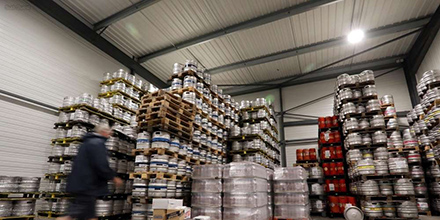

Landes
Les distributeurs de boissons à sec
Economie - Les sociétés Lapique Boisson et Distrilandes sont à l'arrêt et dans l'inconnu depuis sept semaines
" On sera prêt le jour où les cafetiers pourront tourner la clef de leur établissement pour ouvrir au public. " Depuis son bureau dacquois, dans lequel il continue de se rendre chaque matin, Jean-Christophe Dupeyron veille sur les cartons de bouteilles et fûts de bière entreposés dans les locaux de Lapique boissons, société qu'il dirige, comme son pendant montois, Distrilandes.
La fermeture des cafés et restaurants a, par conséquent, précipité l'arrêt de l'activité de ce distributeur de boissons, membre du groupe Larzabal. " Déjà sept semaines ", relève Jean-Christophe Dupeyron, lundi 27 avril. " Mis à part quelques Ehpad, hôpitaux et supermarchés, on n'a plus aucun client à livrer. "Habitués à boire les kilomètres jusqu'aux comptoirs du Gers et des Pyrénées Atlantiques, les camions de Lapique boissons et Distrilandes économisent leurs moteurs. Seuls quatre des 48 salariés continuent de travailler. " Mon intuition me fait dire qu'il n'y aura rien avant mi-juin, même si j'espère me tromper. Mais ce qui est certain, c'est qu'en avril, on est sur une baisse de 97 % de notre d'activité. Pour mai, on est sur zéro commande."
Oubliée des derniers discours gouvernementaux, la date de la première tournée servie dans un bar n'est pas la seule question que pose Jean-Christophe Dupeyron : "Il faudra savoir dans quelles conditions l'accueil du public sera possible, la fameuse distanciation sociale à respecter."
Saisonnalité de l'activité
Depuis le début du confinement et de sa prolongation, l'entreprise fondée à Orist à la fin du XIXe siècle (et qui a fêté ses 130 ans !) enregistre beaucoup d'annulations, de la Pentecôte aux premières fêtes de villages de l'été. " Heureusement, pour l'instant il nous reste quelques Toros de fuego au Pays Basque. Certains clients nous ont dit vouloir maintenir leur feu du 14 juillet.